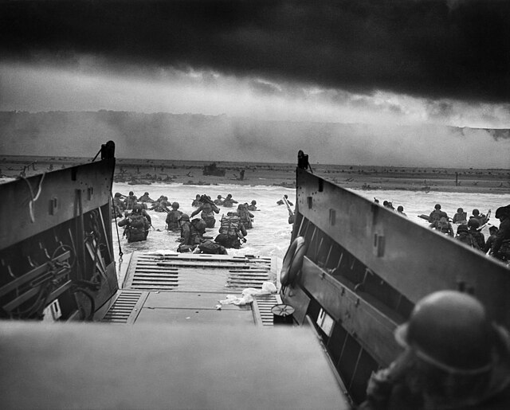

Go Back
United Kingdom
Declaration of war

After WWII, Germany signed the Treaty of Versailles, and had to, among other things, reduce their manpower. When Germany built their army again and started to prepare for an invasion of Poland, the UK stepped in and said that if Germany invaded Poland, they would declare war in response. However, Germany decided to go through with the invasion, and on September 3, 1939, the UK declared war on Germany.
Courtesy of Mododge16, Wikimedia Commons, CC-BY-SA
Escape from Dunkirk
When the UK and France started fighting Germany at the French border, they left a weak spot open. The German army put all the men they could into that weak spot, and took France. The remaining army of the UK was cornered on the beach of Dunkirk, where they were rescued by mostly army ships and a few brave civilian ships.
North African Campaign
Italy decided to attack Egypt to expand their country. At the time, Egypt was British territory. When the Italians invaded, the British were quick to secure the border, and Italy was not able to make sustainable advances in Egypt. Instead, Egypt began invading into Italian territory. Germany finally sent reinforcements to Africa, and started invading Egypt.
Invasion of Italy
The UK decided that a invasion of Italy was the best way to take down Germany. On September 3, 1943, British troops landed in Italy, and were met with little opposition. On one beach was just a man handing out champagne. The Italians were not fighting back as much as they should have, so the Germans took their weapons in an operation known as Operation Axis. However, the fighting was halted as they got close to Germany.
``D-Day
``

The USA decided that the best way to stop the Nazis was an invasion from the north. On June 6, 1944, while British paratroopers secured key locations, the main British force landed at the Sword and Gold beaches. While they faced opposition, it was not as much as the Americans. In the end, they were able to take back France, and began pushing into mainland Germany.
Courtesy of Robert F. Sargent, Wikimedia Commons, CC0